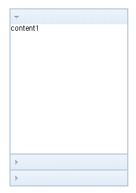
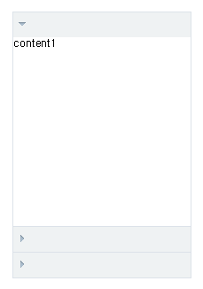
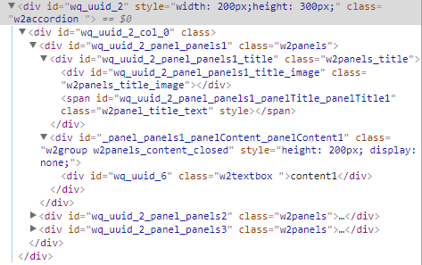

1.Accordion
수정 일자 버전 (SP2)
WebSquare5 Studio : 20180117_1349_x86_B
WebSquare5 Engine : 5.0_2.2982B.20180223.154326_1.5
Accordion 은 서로 다른 컨텐츠를 패널 별로 분리해서 한 화면에 표시해주는 컴포넌트입니다.
1.1Property
Property | Description |
|---|---|
class SP2 | HTML의 class속성과 동일한 기능을 제공하며 css파일 또는 style블럭에 정의 한 class를 1개 또는 공백(space)를 이용하여 다중 적용이 가능하다. 기본적으로 엔진 내부에서 각 컴포넌트 마다의 class를 적용하고 있으며 해당 class를 이용하여 컴포넌트의 css를 공통으로 적용 할 수 있다. |
collapseAll SP2 | [default:true, false]accordion 처음 로딩 시 모든 panel이 닫혀있도록 설정한다. |
collapsible SP2 | panel title click시 panel이 닫힐 수 있도록 설정한다. |
id SP2 | 컴포넌트의 ID로 전역객체로 할당되며 script에서 본 id로 컴포넌트에 접근이 가능하다. |
selectedPanel SP2 | panel id를 입력받아 맨 처음 열릴 panel을 설정한다. |
style SP2 | 사용자 정의 스타일시트 |
tabIndex SP2 | Tab Key를 이용 한 컴포넌트의 포커스 순서로 HTML의 tabindex속성과 동일한 기능을 제공한다. |
titleDivTag SP2 | accordion 처음 로딩 시 모든 panel의 title영역 태그를 div로 변경한다. |
1.2브라우저 캡쳐화면

[그림 1-1]Accordion default 스타일
1.3class 적용과 스타일 변경

[그림 1-2]ScheduleCalendar default 스타일
.w2accordion { border: 1px solid #dce2e9; border-top: none; } .w2accordion .w2panels { border: none; } .w2accordion .w2panels_title { height: 28px; color: #4a4a4a; border-top: 1px solid #dce2e9; background: #eff2f3; }
1.4CSS Overriding

[그림 1-3]06
No | Class | Description |
|---|---|---|
1 | w2accordion | 웹스퀘어 엔진에서 정의된 클래스입니다, 브라우저가 파싱할때 자동으로 부여되는 클래스 입니다. accordion전체를 감싸는 그룹 입니다. |
2 | w2panels | accordion panel을 감싸는 그룹 입니다. |
3 | w2panels_title | accordion title 영역 입니다. |
4 | w2panels_content_closed | accordion이 닫혔을때 지정할 수 있는 클래스 입니다. |
5 | w2panels_content_open | accordion이 열렸을때 지정할 수 있는 클래스 입니다. |